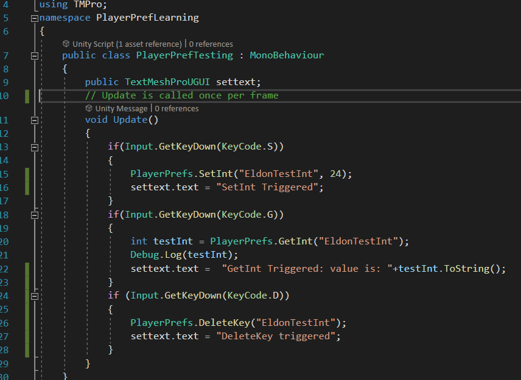
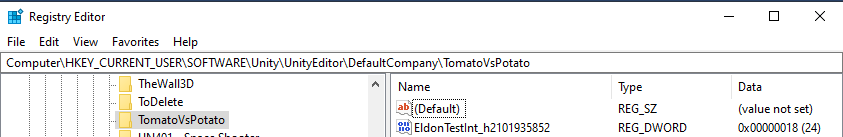

First Android Game - Part 21 - Save data - PlayerPref
Nov 13, 2023
This is part 21 of making my first Android Game. If you missed part20, you can find it here.
Playerpref allows users to store player preferences between game sessions. It can store strings, floats and integers on the user's registry as explainedhere. Below is an example of how I press S to set a key to 24 called "EldonTestInt", press G to get the key and D to delete the key

On windows 10, when I save this value, it will appear in register editor Computer\HKEY_CURRENT_USER\SOFTWARE\Unity\UnityEditor\Company Name\Product Name. Company name and Product name are the names set in Player Settings

Recent blogs
See all blogs